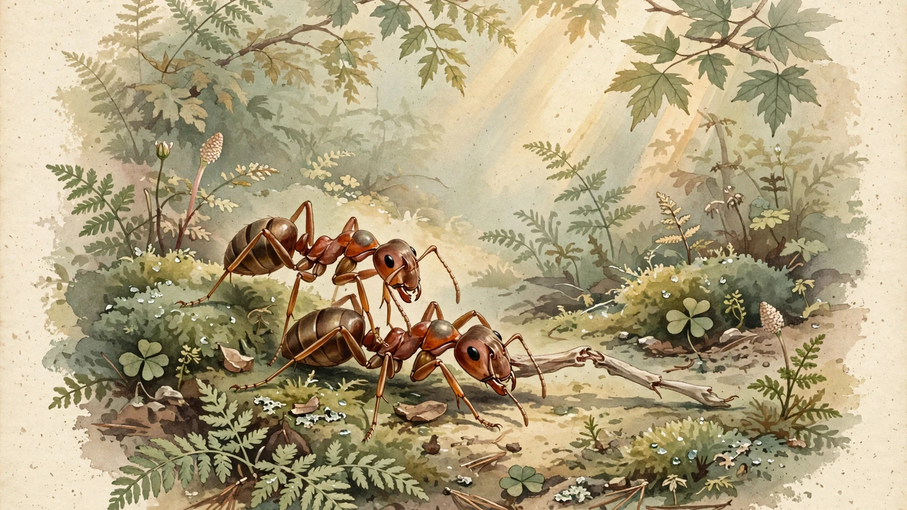

🧬 Biology
Ants Perform Life-Saving Amputations. Florida Carpenter Ants Triage Leg Wounds by Location, Lifting Survival From 15% to 95%
Nestmates amputate infected upper-leg wounds but only clean lower-leg ones, matching the treatment to how fast infection spreads through the limb.

- Study
- Frank ET, et al. "Wound-dependent leg amputations to combat infections in an ant society." Current Biology 34(14):3273-3278.e3 (2024)
- Sample
- Lab colonies of Camponotus floridanus. Wound-care behavior trials: n=8 (femur), n=9 (tibia); amputation-timing experiment: n=10-11 per delay group (supplement). ⚠️ Per-group n under 15 throughout: treat percentages as approximate.
- Method
- Controlled behavioral and microbiological experiments: nestmates' wound-care behavior observed after experimental wounding and infection; micro-CT imaging of leg circulatory anatomy
- Effect size
- Femur wounds: 90-95% survival with nestmate amputation vs under 40% untreated (absolute risk reduction ~55 pts; number needed to treat ~2, article's calculation). Tibia wounds: 75% survival with nestmate cleaning vs 15% untreated.
- Counterintuition score
- 9/10
- Replication status
- Not yet independently replicated; extended to a second carpenter-ant species (Camponotus maculatus) by the same lab in 2025
A Florida carpenter ant limps home with a wounded leg, and what happens next looks uncannily like triage.
Nestmates gather to inspect the injury, and the treatment they choose depends entirely on where the wound sits. When the wound is on the femur, the upper segment of the leg, they do something no other animal is known to do: they amputate, spending forty minutes or more biting through the leg at its base until it detaches. When the wound is on the tibia, the lower segment, they choose an entirely different treatment, cleaning the wound for hours while leaving the leg in place.
Both choices are correct, both save lives, and the logic behind them is brutally practical.
A team led by Erik Frank at the University of Lausanne reported in July 2024 that this is the first documented case of amputation used to treat infected individuals in a nonhuman animal, a claim that rests on controlled behavioral and microbiological experiments rather than field anecdotes. Wounded ants left alone died most of the time, while wounded ants tended by nestmates usually lived.
Those numbers are stark. Ants with infected femur wounds survived at rates of 90 to 95 percent when nestmates amputated, compared with under 40 percent when left untreated. Ants with infected tibia wounds survived about 75 percent of the time with prolonged nestmate cleaning, versus 15 percent on their own. Few human medical interventions achieve mortality reductions of that size.
Here is the part that scrambles intuition: you might expect the ants to amputate the wound where infection spreads fastest, yet they do precisely the opposite.
An ant leg circulates hemolymph, the insect equivalent of blood, driven by muscles that the researchers mapped with micro-CT scans. Those scans showed the pumping muscles concentrated in the femur, which means a femur wound damages the pumping machinery itself and slows hemolymph flow to a crawl, while a tibia wound leaves the pumps untouched and the fluid racing.
That difference sets a clock. Amputation is slow, deliberate work, taking nestmates at least forty minutes of continuous biting to sever a leg at the trochanter, the joint where leg meets body. After a femur wound, the slowed circulation buys that time: the pathogen creeps instead of sprinting, and the surgeons finish before infection reaches the body. After a tibia wound, the pathogen rides a fully working circulatory highway, the same forty-minute operation would finish too late, and so the ants switch strategies and clean instead.
To test the mechanism, the researchers experimentally amputated infected tibia wounds themselves, and survival did not improve the way it did for femur wounds. The supplement quantifies the clock: for tibia wounds, delaying amputation by just five minutes raised the hazard of death more than eightfold compared with immediate amputation, while for femur wounds even an hour's delay made no significant difference. Surgery that arrives after the infection has already spread is just mutilation.
Put in decision-theoretic terms, the ants appear to implement a simple inequality, amputate only when the expected pathogen transit time to the body exceeds the duration of the surgery itself, so a femur wound with its slowed flow and transit time above forty minutes triggers amputation while a tibia wound with normal flow and transit time below forty minutes triggers cleaning. No ant understands this math. Natural selection did the arithmetic over millions of years and hardwired the answer.
Effect sizes this large deserve a human-medicine translation. For femur wounds, nestmate care cut mortality from over 60 percent to roughly 5 to 10 percent, an absolute risk reduction near 55 percentage points, which implies a number needed to treat of about two, meaning tend two wounded ants and save one extra life, while most celebrated human drugs post numbers needed to treat in the dozens or hundreds. For tibia wounds, mortality fell from 85 percent to 25 percent, a number needed to treat under two. This calculation is mine, built from the survival figures the authors reported, and it shows how extreme the benefit is.
This is not the first time Frank's group has found medical behavior in ants. In 2023, the same lab showed that African Matabele ants diagnose infected wounds and treat them with antimicrobial compounds harvested from their metapleural glands, cutting mortality by 90 percent, yet carpenter ants lack that pharmacy and must use the cruder tools available: jaws, patience, and a decision rule keyed to anatomy.
The story kept moving after publication. In 2025, Frank's group reported that a different carpenter ant, Camponotus maculatus, amputates legs prophylactically without distinguishing infected from sterile wounds, because in that species the chemical signature of infection only becomes detectable after the treatment window has closed. The ants cut first and never ask questions: two species, two strategies, one shared problem. What makes the contrast instructive is that "ant surgery" is not one universal algorithm but a family of hardwired policies, each tuned to what its species can detect in time.
That brings us to the strongest counterargument, and it deserves full strength. Nothing here requires a surgeon inside the ant's head. Laurent Keller, the senior author, puts it plainly: the care behaviors are really all innate behavior, with very little evidence of any learning, which means a fixed rule, amputate femur wounds and clean tibia wounds, executed by tiny brains with no concept of germ theory, produces outcomes that look like differential diagnosis. Complicating the diagnosis story further, the 2025 follow-up found that Camponotus maculatus amputates blindly without checking infection status at all, which is difficult to square with genuinely sophisticated assessment in a sister species. What we are watching may be less like a doctor choosing a treatment and more like a thermostat switching on the heat: a hardwired response tuned by selection, not a clinical judgment. Bear in mind that the anthropomorphic language, surgeons and triage and diagnosis, is journalism's, not the ants'.
Laboratory conditions add a second caveat, since these were experimentally inflicted wounds infected with a lab pathogen rather than the ragged reality of territorial battles and foraging accidents. Colony life in a plastic box differs from life under a Florida log, and whether wild ants execute the same policy with the same success is untested.
None of that diminishes the finding. A hardwired rule that reads wound location, factors in circulatory physics, and allocates a forty-minute surgery only where the clock allows is remarkable precisely because no one is home to do the reasoning. Evolution built the triage protocol, and the ants just run it.
What We Didn't Prove
- These were laboratory experiments, not wild colonies under natural conditions. Wounds were experimentally inflicted and infected with Pseudomonas aeruginosa, not sustained in the ragged reality of foraging and fighting.
- The sensory mechanism for wound assessment in C. floridanus remains unidentified: the ants must somehow register wound location, but exactly how is unknown.
- The per-group sample sizes, while sufficient for statistical significance, are modest by human clinical-trial standards; percentages should be read with that in mind.
- The 2025 extension comes from the same research group, not an independent lab. True independent replication has not yet happened.
- As Frank himself notes, the pain question is open: whether amputation hurts, and how the amputated ant fares afterward, is unstudied.
The Bottom Line
Florida carpenter ants perform the only known nonhuman amputations to treat infection, and they triage: femur wounds get surgery, tibia wounds get cleaning. Survival jumps from under 40% to 90-95% for femur wounds and from 15% to 75% for tibia wounds. The decision tracks circulation physics rather than wound severity: slow surgery is only worth attempting when slowed hemolymph gives the surgeons time to finish.
What You Can Do
- Watch social insects with fresh eyes. If you keep ants or observe them outdoors, treat wound-care behavior as a window into social immunity. Observe and document rather than intervene; a colony's medical routines were tuned by millions of years of selection, not guesswork.
- Borrow the triage principle, not the mandibles. The ants converged on logic human surgeons use: match the intervention's speed to the physiology in front of you. In your own work, identify which constraint actually limits the outcome before reaching for the dramatic fix.
- Support curiosity-driven biology. Nobody set out to discover ant surgery; the finding came from basic research on how ant societies handle injury. The next medical insight may be hiding in a nest near you.
Sources
- Frank ET, Buffat D, Liberti J, et al. Wound-dependent leg amputations to combat infections in an ant society. Current Biology. 2024;34(14):3273-3278.e3. doi:10.1016/j.cub.2024.06.021
- Frank ET, Kesner L, Liberti J, et al. Targeted treatment of injured nestmates with antimicrobial compounds in an ant society. Nature Communications. 2023;14:8446. doi:10.1038/s41467-023-43885-w
- Fujimoto S, Lagos-Oviedo JJ, Seibel F, et al. Better safe than sorry: leg amputations as a prophylactic wound care behaviour in carpenter ants. Proceedings of the Royal Society B. 2025;292(2057):20251688. doi:10.1098/rspb.2025.1688